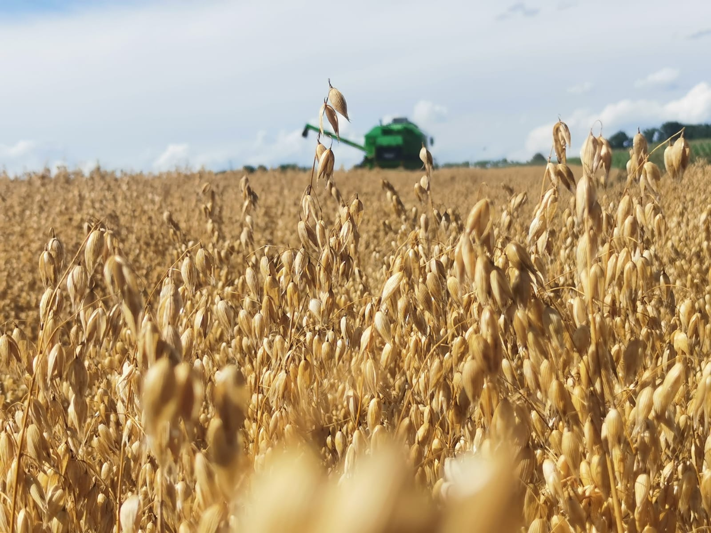

Galerija


Svaka kap i plod nose priču obitelji Abramović
Saznaj višeObiteljsko poljoprivredno gospodarstvo Abramović (OPG Abramović) službeno je osnovano 2005. godine, ali njegove korijene čine višegodišnja predanost i rad obitelji u poljoprivredi. Osnivači Slavko i Marija Abramović, ujedno i glavni nositelji svih poslovnih odluka, postavili su temelje ovog obiteljskog poduzeća, koje je kroz svoje višegodišnje postojanje prošlo kroz brojne promjene i izazove, ostajući pritom čvrsto utemeljeno na obiteljskim vrijednostima i predanosti poslu.
Tijekom gotovo dva desetljeća poslovanja, OPG Abramović suočio se s brojnim izazovima, uključujući prirodne nepogode, promjene u cijeni žitarica na tržištu te ostale nepredviđene okolnosti koje su utjecale na poljoprivrednu industriju. No, zahvaljujući zajedničkom radu obitelji, predanosti i odricanju, obitelj Abramović uspjela je prevladati te prepreke, zadržavajući pritom stabilnost i kvalitetu svoje proizvodnje.
Pšenica, kukuruz, soja — uzgojeni s ljubavlju i znanjem.
Tradicionalni uzgoj svinja, temelj naše obiteljske tradicije.
Prirodni domaći med iz vlastitog pčelinjaka.
Sezonsko voće uzgojeno s ljubavlju i pažnjom.
Adresa: Ašikovci, Pleternica
Telefon: 099 749 0346
Email: opgabramovic2005@gmail.com
Instagram: @opg_abramovic